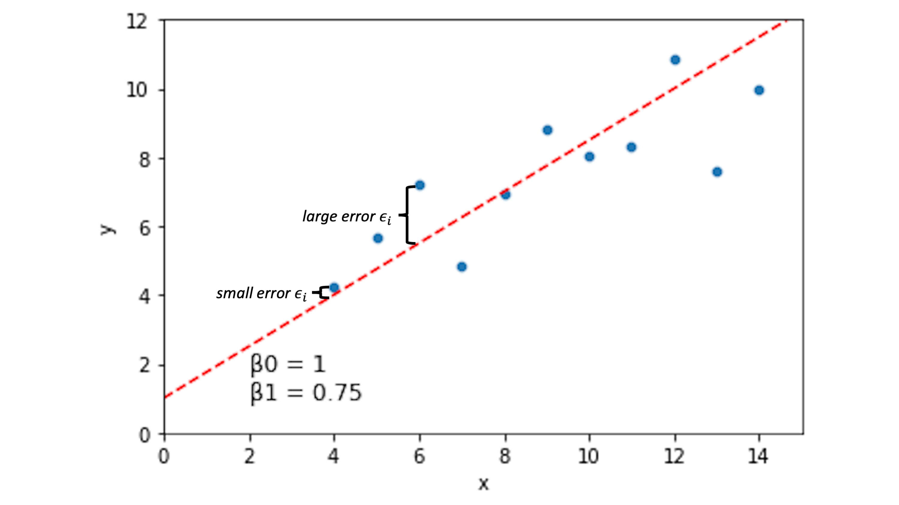
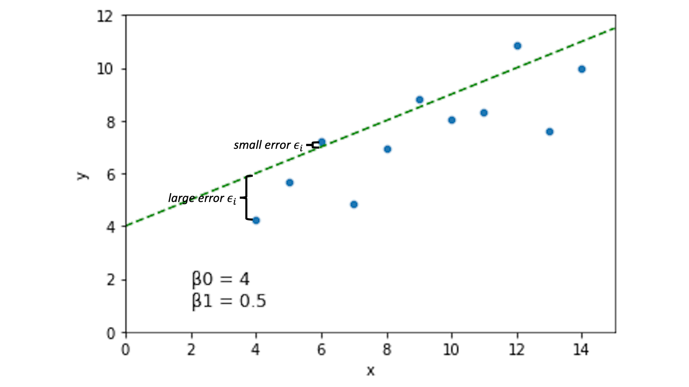

Lecture 13 (4/25/22)¶
Announcements
Pset 3 due this Wednesday, 4/27
Last time we covered:
Data cleaning, organizing, and transforming
Today’s agenda:
Linear regression overview
import numpy as np
import pandas as pd
import matplotlib.pyplot as plt
import seaborn as sns
Linear regression¶
Briefly, linear regression is a way of describing a linear relationship between two (continuous) variables.
What does it do for us?¶
Predict unknown values of \(y\) based on unseen values of \(x\)
Quantify the strength and direction of the relationship between \(y\) and \(x\)
To understand this better, let’s look at an example.
ans = sns.load_dataset('anscombe')
dat = ans[ans['dataset'] == "I"]
print(dat)
sns.scatterplot(data = dat, x = "x", y = "y")
plt.show()
dataset x y
0 I 10.0 8.04
1 I 8.0 6.95
2 I 13.0 7.58
3 I 9.0 8.81
4 I 11.0 8.33
5 I 14.0 9.96
6 I 6.0 7.24
7 I 4.0 4.26
8 I 12.0 10.84
9 I 7.0 4.82
10 I 5.0 5.68
Looking at the graph above, it seems like we can do a decent job predicting \(y\) if we know \(x\)!
How can we describe the relationship between \(y\) and \(x\) here?¶
“Larger \(y\) values lead to larger \(x\) values” => could be more precise…
“The covariance between \(x\) and \(y\) is 5.5” => will change with values of \(x\) and \(y\)
“The correlation between \(x\) and \(y\) is 0.8” => does not tell us about slope
“Every time \(x\) increases by 1, \(y\) increases by about 0.5” => requires estimating a slope value
# Quick illustration of 2 above: same relationship, different covariance
covdat = pd.DataFrame({"x1": [1, 2, 3],
"y1": [1, 2, 3],
"x2": [4, 6, 8],
"y2": [4, 6, 8]
})
sns.scatterplot(x = covdat.x1, y = covdat.y1)
sns.scatterplot(x = covdat.x2, y = covdat.y2)
plt.xlabel("x")
plt.ylabel("y")
print(covdat)
print("Covariance between x and y1: {}".format(np.cov(covdat.x1, covdat.y1)))
print("Covariance between x and y2: {}".format(np.cov(covdat.x2, covdat.y2)))
x1 y1 x2 y2
0 1 1 4 4
1 2 2 6 6
2 3 3 8 8
Covariance between x and y1: [[1. 1.]
[1. 1.]]
Covariance between x and y2: [[4. 4.]
[4. 4.]]
# Quick illustration of 3 above: same correlation, very different relationship
cordat = pd.DataFrame({"x": [1, 2, 3],
"y1": [4, 5, 6],
"y2": [2, 4, 6]
})
cordat_l = cordat.melt(id_vars = "x")
print(cordat)
print("Correlation between x and y1: {}".format(np.corrcoef(cordat.x, cordat.y1)))
print("Correlation between x and y2: {}".format(np.corrcoef(cordat.x, cordat.y2)))
sns.lmplot(data = cordat_l, x = "x", y = "value", hue = "variable")
plt.show()
x y1 y2
0 1 4 2
1 2 5 4
2 3 6 6
Correlation between x and y1: [[1. 1.]
[1. 1.]]
Correlation between x and y2: [[1. 1.]
[1. 1.]]
So to describe the relationship between \(x\) and \(y\) in our original data in a way that is consistent for data that show a similar relationship (ex. 1 above) and distinct for data that have a different relationship (ex. 2 above), we want to know the slope of the best line through the points.
This tells us about how these variables are related and lets us predict \(y\) from values of \(x\) that we haven’t seen before.
So how do we find the best slope estimate?¶
Our goal is to quantify how changes in \(x\) lead to changes in \(y\).
But lots of different lines can be drawn through our data.
How do we decide?
# Our original data
sns.scatterplot(data = dat, x = "x", y = "y")
plt.show()

# Which of these lines is best? Why?
sns.scatterplot(data = dat, x = "x", y = "y")
plt.axline(xy1 = (0, 1), slope = .75, color = "r", linestyle = "--")
plt.axline(xy1 = (0, 4), slope = .5, color = "g", linestyle = "--")
plt.axline(xy1 = (0, 3.5), slope = .4, color = "k", linestyle = "--")
plt.xlim(0, 15)
plt.ylim(0, 12)
plt.show()
Linear regression: choose the line that minimizes the sum of the squared errors¶
This isn’t the only solution, but it’s a pretty good one for many situations. But what does this mean?
First, we can describe each possible line through our data as having an intercept \(\beta_0\) and a slope \(\beta_1\).
sns.scatterplot(data = dat, x = "x", y = "y")
plt.axline(xy1 = (0, 1), slope = .75, color = "r", linestyle = "--")
plt.xlim(0, 15)
plt.ylim(0, 12)
plt.text(2, 1, "\u03B20 = 1 \n\u03B21 = 0.75", fontsize = 12)
plt.show()
How well does a line like the one above describe the relationship between \(x\) and \(y\)?
For a line describing our data with intercept \(\beta_0\) and slope \(\beta_1\), we can quantify how well each of our data points \((x_i, y_i)\) is predicted by this line:
\(y_i = \beta_0 + \beta_1*x_i + \epsilon_i\)
The \(\epsilon_i\) term here is the error term. If this value is 0 for a given data point, it means our line captures that data point perfectly. If it’s large (positive or negative), our line is doing a bad job predicting our data at that location.

Other lines will have different error spread across our data points:

Now, the idea is that if we choose \(\beta_0\) and \(\beta_1\) to minimize the error \(\epsilon_i\) across our data, we’ll have a pretty good line.
What does this look like in our actual data?
Let’s fill in the predictions and the error for \(\beta_0 = 1\) and \(\beta_1 = 0.75\).
dat
| dataset | x | y | |
|---|---|---|---|
| 0 | I | 10.0 | 8.04 |
| 1 | I | 8.0 | 6.95 |
| 2 | I | 13.0 | 7.58 |
| 3 | I | 9.0 | 8.81 |
| 4 | I | 11.0 | 8.33 |
| 5 | I | 14.0 | 9.96 |
| 6 | I | 6.0 | 7.24 |
| 7 | I | 4.0 | 4.26 |
| 8 | I | 12.0 | 10.84 |
| 9 | I | 7.0 | 4.82 |
| 10 | I | 5.0 | 5.68 |
What is the predicted \(y\) value for the \(\beta_0\) and \(\beta_1\) values above?
beta0 = 1.0
beta1 = 0.75
dat = dat.assign(y_pred = beta0 + beta1 * dat.x)
dat
# Is it clear what y_pred represents here?
| dataset | x | y | y_pred | |
|---|---|---|---|---|
| 0 | I | 10.0 | 8.04 | 8.50 |
| 1 | I | 8.0 | 6.95 | 7.00 |
| 2 | I | 13.0 | 7.58 | 10.75 |
| 3 | I | 9.0 | 8.81 | 7.75 |
| 4 | I | 11.0 | 8.33 | 9.25 |
| 5 | I | 14.0 | 9.96 | 11.50 |
| 6 | I | 6.0 | 7.24 | 5.50 |
| 7 | I | 4.0 | 4.26 | 4.00 |
| 8 | I | 12.0 | 10.84 | 10.00 |
| 9 | I | 7.0 | 4.82 | 6.25 |
| 10 | I | 5.0 | 5.68 | 4.75 |
So what’s our error \(\epsilon_i\)?
dat = dat.assign(error = dat.y - dat.y_pred)
dat
# What does our error look like?
| dataset | x | y | y_pred | error | |
|---|---|---|---|---|---|
| 0 | I | 10.0 | 8.04 | 8.50 | -0.46 |
| 1 | I | 8.0 | 6.95 | 7.00 | -0.05 |
| 2 | I | 13.0 | 7.58 | 10.75 | -3.17 |
| 3 | I | 9.0 | 8.81 | 7.75 | 1.06 |
| 4 | I | 11.0 | 8.33 | 9.25 | -0.92 |
| 5 | I | 14.0 | 9.96 | 11.50 | -1.54 |
| 6 | I | 6.0 | 7.24 | 5.50 | 1.74 |
| 7 | I | 4.0 | 4.26 | 4.00 | 0.26 |
| 8 | I | 12.0 | 10.84 | 10.00 | 0.84 |
| 9 | I | 7.0 | 4.82 | 6.25 | -1.43 |
| 10 | I | 5.0 | 5.68 | 4.75 | 0.93 |
So now we have our error for \(\beta_0\) = 1 and \(\beta_1\) = 0.75.
How do we combine these values to compare them to other possible \(\beta_0\) and \(\beta_1\) fits?
Add up the error values?
Take the average?
Can you think of any problems with the above?
sns.histplot(data = dat, x = "error", bins = 10, kde = True)
plt.axvline(0, color = "k", linestyle = "--")
print("Sum of the error values: {}".format(dat['error'].sum()))
# positive and negative error values cancel each other out
print("Mean of the error values: {}".format(dat['error'].mean()))
# how do we compare negative and positive average error?
Sum of the error values: -2.7399999999999993
Mean of the error values: -0.24909090909090903
Linear regression: evaluate \(\beta_0\) and \(\beta_1\) using sum of squared error
Square each error value \(\epsilon_i\) so that positive and negative error both contribute equally to our parameter estimates
Then sum up the squared error across all our data points \((x_i, y_i)\)
We’ll call this our sum of squared error (SSE).
\( SSE = \sum_{i=1}^{n} {\epsilon_i}^2 \)
Now, our best-fitting line is parameterized by the \(\beta_0\) and \(\beta_1\) values that minimize sum of squared error.
\( \hat{\beta_0} = \arg \min_{\beta_0} \sum_{i=1}^{n} {\epsilon_i}^2 = \arg \min_{\beta_0} SSE \)
\( \hat{\beta_1} = \arg \min_{\beta_1} \sum_{i=1}^{n} {\epsilon_i}^2 = \arg \min_{\beta_1} SSE \)
This is often called ordinary least squares (OLS) regression.
Calculating sum of squared error
Let’s calculate SSE for our sample \(\beta_0\) = 1 and \(\beta_1\) = 0.75 parameter values above.
# Square the error term for each datapoint (xi, yi)
dat = dat.assign(sq_error = dat.error**2)
dat
| dataset | x | y | y_pred | error | sq_error | |
|---|---|---|---|---|---|---|
| 0 | I | 10.0 | 8.04 | 8.50 | -0.46 | 0.2116 |
| 1 | I | 8.0 | 6.95 | 7.00 | -0.05 | 0.0025 |
| 2 | I | 13.0 | 7.58 | 10.75 | -3.17 | 10.0489 |
| 3 | I | 9.0 | 8.81 | 7.75 | 1.06 | 1.1236 |
| 4 | I | 11.0 | 8.33 | 9.25 | -0.92 | 0.8464 |
| 5 | I | 14.0 | 9.96 | 11.50 | -1.54 | 2.3716 |
| 6 | I | 6.0 | 7.24 | 5.50 | 1.74 | 3.0276 |
| 7 | I | 4.0 | 4.26 | 4.00 | 0.26 | 0.0676 |
| 8 | I | 12.0 | 10.84 | 10.00 | 0.84 | 0.7056 |
| 9 | I | 7.0 | 4.82 | 6.25 | -1.43 | 2.0449 |
| 10 | I | 5.0 | 5.68 | 4.75 | 0.93 | 0.8649 |
# Calculate the sum of the squared error values
sum_sq_error = dat.sq_error.sum()
sum_sq_error
21.315199999999997
Your turn! See if you can identify a pair of values \(\beta_0\) and \(\beta_1\) that have a lower SSE than the value above.
### CODE HERE ###
# beta0, beta1 values and their corresponding SSE
(1.1, 0.7, 18.27) # x3
(1.05, 0.7, 18.409)
(1, 0.7, 18.6) # x3
(3.5, 0.5, 16.5)
(3.5, 0.5, 16.5)
We just calculated SSE for sample \(\beta_0\) and \(\beta_1\) values, but how do we find the values that are guaranteed to have the lowest SSE?
How do we find our optimal linear regression parameters?¶
As we’ll see throughout this quarter, fitting parameters in a model often involves finding values that minimize a particular loss function (in this case, SSE).
There are a lot of techniques for doing this. Optimization is largely focused on comparing and evaluating these techniques.
Option 1: Search the parameter space ourselves!
Let’s illustrate a simple one to get an intuition for it: a basic grid search.
# Initialize our parameters to find the beta0 and beta1 that minimize SSE
best_beta0 = -np.inf
best_beta1 = -np.inf
min_sse = np.inf
# Write a function to calculate SSE for easier logic below
def sse(b0, b1, data):
return np.sum((data.y - (b0 + b1 * data.x))**2)
# Test the fxn above!
# print(sse(b0 = 1, b1 = 0.75, data = dat))
# Side project: store the param values we consider and their corresponding SSE in a separate dataframe
# We'll use this to make a heatmap showing SSE for the parameter fits
b0_vals = []
b1_vals = []
sse_vals = []
# Find our best fitting b0 and b1 values by searching over a reasonable range
# Takes ~30-60s to run
for b0 in np.arange(start = -5, stop = 5, step = 0.1): # what beta_0 values do we want to consider?
for b1 in np.arange(start = -5, stop = 5, step = 0.1): # what beta_1 values do we want to consider?
sse_tmp = sse(b0, b1, dat)
b0_vals.append(b0)
b1_vals.append(b1)
sse_vals.append(sse_tmp)
if sse_tmp < min_sse:
best_beta0 = b0
best_beta1 = b1
min_sse = sse_tmp
print("Best fits by grid search: beta0 = {}, beta1 = {}, sse = {}".format(best_beta0, best_beta1, min_sse))
Best fits by grid search: beta0 = 2.9999999999999716, beta1 = 0.49999999999998046, sse = 13.762700000000004
How did we do?
Let’s graph our original data with the solution above:
sns.scatterplot(data = dat, x = "x", y = "y")
plt.axline(xy1 = (0, best_beta0), slope = best_beta1, color = "r", linestyle = "--")
plt.xlim(0, 15)
plt.ylim(0, 12)
plt.text(2, 1, "\u03B20 = {} \n\u03B21 = {}".format(round(best_beta0, 3), round(best_beta1, 3)), fontsize = 12)
plt.show()
This is a pretty good guess. But it’s slow, not as precise, and required us to specify ahead of time what range we thought the values would take on.
In other settings, we can do better by trying out values which are closer and closer to the best fitting value, rather than just trying everything in a range.
Below let’s look at the heatmap of SSE across our parameter values (this is the sort of thing that more complex optimization approaches might use to find the parameter values quickly).
params = pd.DataFrame({
"b0": b0_vals,
"b1": b1_vals,
"sse": sse_vals
})
params_subset = params[(params.b0 > 2) & (params.b0 < 4) & (params.b1 > 0) & (params.b1 < 1)]
params_subset = params_subset.pivot("b0", "b1", "sse")
params_subset
g = sns.heatmap(params_subset, cmap="YlGnBu", vmin = 10, vmax = 50)
Option 2: Solve for \(\beta_0\) and \(\beta_1\)
For linear regression, it turns out that the best fitting solution can be specified analytically: we know ahead of time what the best fitting parameter values will be!
\( \hat{\beta} = ({X^T}X)^{-1}{X^T}y \)
Why does this solution exist every time? Beyond the scope of this lecture but take a look at the resources at the bottom if you’re curious :)
For now, let’s just see what values we get when we solve our original regression analytically using the solution above:
from numpy.linalg import inv
y = np.array(dat['y'])
y = y.reshape(len(dat['y']), 1)
b0 = np.ones((len(dat.x), 1))
b1 = np.array(dat['x'])
b1 = b1.reshape((len(dat['x']), 1))
X = np.concatenate((b0, b1), axis = 1)
betas = inv(X.T.dot(X)).dot(X.T).dot(y)
betas
array([[3.00009091],
[0.50009091]])
This is the true minimum, pretty close to what we found in our basic grid search!
Fortunately, when doing regression with actual data, we don’t need to do the grid search or the linear algebra solution by hand!
Option 3: Fit a model with python tools
Here’s a solution using the scikit learn LinearRegression library.
# Import the LinearRegression model from scikit learn
from sklearn.linear_model import LinearRegression
# Initialize our model
model = LinearRegression() # note you can pass in add'l arguments at initialization here
# Fit the model to our data
model.fit(X = b1, y = y) # note: it expects numpy arrays formatted the way we set them up above!
# Output the model parameter fits
print("Model fits: intercept = {}, slope = {}".format(model.intercept_, model.coef_))
Model fits: intercept = [3.00009091], slope = [[0.50009091]]
sns.scatterplot(data = dat, x = "x", y = "y")
plt.axline(xy1 = (0, model.intercept_[0]), slope = model.coef_[0][0], color = "r", linestyle = "--")
plt.xlim(0, 15)
plt.ylim(0, 12)
plt.text(2, 1, "\u03B20 = {} \n\u03B21 = {}".format(round(model.intercept_[0], 3), round(model.coef_[0][0], 3)), fontsize = 12)
plt.show()
For linear regression, there are several other common python libraries available which will all produce fairly similar outputs.
You don’t need to learn all of them as long as you find one you’re comfortable with!
# Numpy polyfit
np.polyfit(dat.x, dat.y, 1)
array([0.50009091, 3.00009091])
# Statsmodels
import statsmodels.formula.api as smf
results = smf.ols('y ~ x', data = dat).fit()
results.summary()
/opt/anaconda3/lib/python3.8/site-packages/scipy/stats/stats.py:1603: UserWarning: kurtosistest only valid for n>=20 ... continuing anyway, n=11
warnings.warn("kurtosistest only valid for n>=20 ... continuing "
| Dep. Variable: | y | R-squared: | 0.667 |
|---|---|---|---|
| Model: | OLS | Adj. R-squared: | 0.629 |
| Method: | Least Squares | F-statistic: | 17.99 |
| Date: | Tue, 14 Jun 2022 | Prob (F-statistic): | 0.00217 |
| Time: | 18:21:36 | Log-Likelihood: | -16.841 |
| No. Observations: | 11 | AIC: | 37.68 |
| Df Residuals: | 9 | BIC: | 38.48 |
| Df Model: | 1 | ||
| Covariance Type: | nonrobust |
| coef | std err | t | P>|t| | [0.025 | 0.975] | |
|---|---|---|---|---|---|---|
| Intercept | 3.0001 | 1.125 | 2.667 | 0.026 | 0.456 | 5.544 |
| x | 0.5001 | 0.118 | 4.241 | 0.002 | 0.233 | 0.767 |
| Omnibus: | 0.082 | Durbin-Watson: | 3.212 |
|---|---|---|---|
| Prob(Omnibus): | 0.960 | Jarque-Bera (JB): | 0.289 |
| Skew: | -0.122 | Prob(JB): | 0.865 |
| Kurtosis: | 2.244 | Cond. No. | 29.1 |
Notes:
[1] Standard Errors assume that the covariance matrix of the errors is correctly specified.
Resources¶
There are lots of awesome resources out there to make sense of ordinary least squares regression. If you’d like to get a better handle on the stuff we discussed today, or if you want to dig deeper on the math (it’s neat!), take a look at some of these pages: